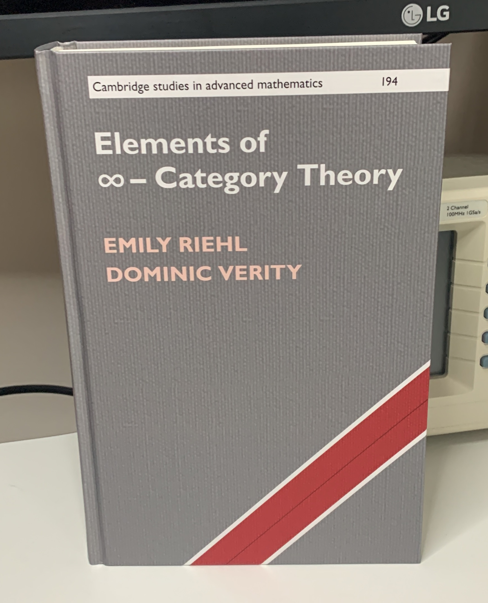

February 9, 2023, Posted by Dom Verity
Yesterday the Association of American Publishers (AAP) unveiled the 105 finalists and 40 Category winners for the 47th Annual PROSE Awards honouring scholarly works published in 2023.
We are very proud to say that the Elements of ∞-Category Theory won the PROSE Award in the Mathematics and Statistics category.
Read more...
September 16, 2022, Posted by Dom Verity
On Monday the 19th of September 2022 I will be speaking at the Categories and Companions Symposium 2022 on the value of pursuing unlikely ideas in a talk entitled “Themes and Motivations in ∞-Cosmology”.
Abstract
In this talk, we review the current state of the art in model agnostic ∞-category theory, which seeks to provide a unified account of ∞-category theory freed from the straight jacket of a specific model.
In particular, we shall focus on the theory of ∞-cosmoi [1], a general framework for the development of fibrational ∞-category theories. The key novelty of this approach is that it allows both for the model independent, synthetic development of ∞-categorical results and for the transport of analytically derived such results from one model to another.
Read more...
March 12, 2022, Posted by Dom Verity
Last Friday morning I spoke in the Topos Institute Colloquium on the topic of model independent and synthetic approaches to ∞-category theory. This might be considered part of our virtual book tour for The Elements.
You can view the video of this talk and play along with my slides.
Abstract
You may well have heard the rumour that ∞-category theory is “really just like category theory with a little homotopy theory thrown in”. Inspired by that comment, you might even have headed to a book on ∞-categories or to the nLab to find out more, only to find that things in the ∞-world are far from that simple.
Read more...
January 22, 2022, Posted by Dom Verity

The book Elements of ∞-Category Theory by Emily Riehl and Dom Verity has just been published (February 2022) by Cambridge University Press as volume 194 of the series Cambridge Studies in Advanced Mathematics. Here’s what the reviewers are saying:
‘Emily and Dom have done what many thought impossible: they have written an introductory text on a model-independent approach to higher category theory. This self-contained text is ideal for both end-users and architects of higher category theory. Every page is bursting at the seams with gorgeous insights and the refreshingly candid delight the authors take in their subject.’
Clark Barwick - University of Edinburgh
Read more...
January 15, 2022, Posted by Emily Riehl and Dom Verity
In 2017 Emily Riehl and I posted a paper [1] on the arXiv entitled “The comprehension construction.” and we blogged about it on the n-Category Café. That post explains the use of the term comprehension in the title of that paper.
I have reproduced it here to show off some Haskell hacking I’ve been indulging in to support the typesetting of category theoretic diagrams in blog posts. To do this I’ve used LaTeX to generate SVG images, from diagrams specified using packages such as PGF/TikZ, which are then inlined directly into HTML pages.
Read more...
 Site created with
Site created with